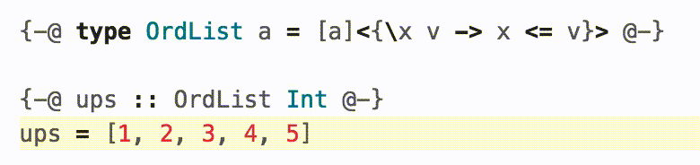
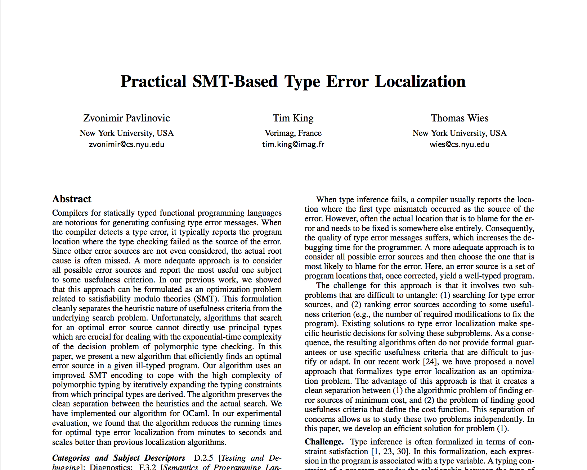
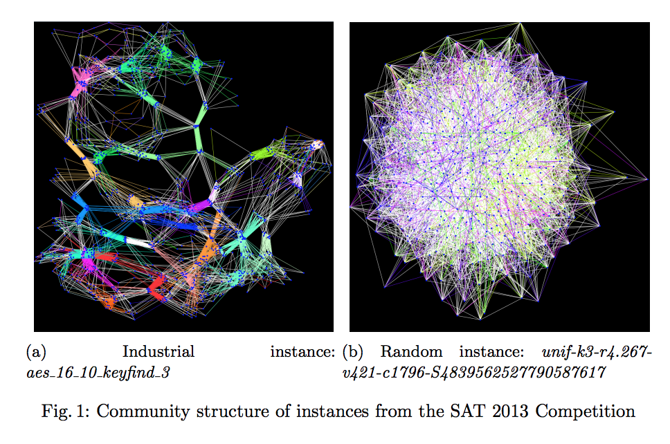
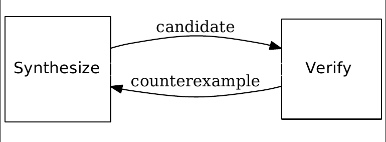

Analyzing Programs
with SMT solvers
Tikhon Jelvis
Constraint Satisfaction




SMT
Satisfiability Modulo Theories
Satisfiability (SAT)
\begin{equation}
(x_1 \lor \lnot x_2) \land (x_1 \lor x_3 \lor \lnot x_4) \land \cdots
\end{equation}
Theories
\begin{equation}
x_1 \le 10 \land x_3 \le x_1 + x_2 \land \cdots
\end{equation}
Theories
- integers
- reals
- bitvectors
- floating point numbers
- arrays
- …
Why?
Expressive
Fast

Program ⇒ SMT formula
- Inputs
- States
- Outputs
Inputs ⇒ States + Outputs
Outputs ⇒ Inputs + States
P(States) ⇒ Check Invariant
∃ Input. Output₁ ≠ Output₂
gcd(a, b) {
d := 0;
while (even(a) && even(b)) {
a := a / 2;
b := b / 2;
d := d + 1;
}
while (a != b) {
...;
}
return d;
}
IMP
1 + x * 2
(x <= 10) && (y == 5)
side effects:
x := x + 1
⋯ ; ⋯
while cond { ⋯ }
if cond { ⋯ } else { ⋯ }
\begin{align}
A ::&= x & \text{variable}\\
&|\quad n & \text{literal} \\
&|\quad A + A & \\
&|\quad A - A & \\
&|\quad A * A & \\
&|\quad A / A &
\end{align}
data AExp = Var Name
| Lit Int
| AExp :+: AExp
| AExp :-: AExp
| AExp :*: AExp
| AExp :/: AExp
data BExp = True' | False' | ⋯
data Cmd = Skip
| Set Name AExp
| Seq Cmd Cmd
| If BExp Cmd Cmd
| While BExp Cmd
Z3 SMT Solver
Inline ⇒ Unroll ⇒ SSA
Inline
foo(a, b) {
⟨BODY⟩;
return x
}
…
result := foo (1, 2);
// fresh names
foo_a := 1;
foo_b := 2;
⟨BODY⟩
result := foo_x;
Unroll
while x < 5 { ⟨BODY⟩ }
if x < 5 {
⟨BODY⟩
if x < 5 {
… /* n times */
} else {}
} else {}
SSA
- Single Static Assignment
x := 10;
a := 11;
x := x + a;
x₀ := 10;
a₀ := 11;
x₁ := x₀ + a₀;
if x < 5 {
x := x + 1;
} else {
x := x + 2;
}
if x < 5 {
x₁ := x₀ + 1;
} else {
x₂ := x₀ + 2;
}
x₃ := φ(x₁, x₂)
Interpreter
aexp ∷ (Scope Int) → AExp → Int bexp ∷ (Scope Int) → BExp → Bool cmd ∷ (Scope Int) → Cmd → ScopeCompiler
aexp ∷ (Scope AST) → AExp → Z3 AST bexp ∷ (Scope AST) → BExp → Z3 AST cmd ∷ (Scope AST) → Cmd → Z3 ()
5 + x
\begin{align}
bvAdd(&bv(5, 32),\\ &bv(x_0, 32))
\end{align}
Expressions
Lit n → n
Var x → lookup scope x
e₁ :+: e₂ → aexp scope e₁ +
aexp scope e₂
Lit n → Z3.mkBv 32 n
Var x → lookup x scope
e₁ :+: e₂ → do exp₁ ← aexp scope e₁
exp₂ ← aexp scope e₂
Z3.mkAdd exp₁ exp₂
x = 5 + x
\begin{align}
\text{assert}(x_1 = bvAdd(&bv(5, 32), \\ &bv(x_0, 32)))
\end{align}
Assignment
Set name val →
let newVal = aexp scope val in
update name newVal scope
Set name val →
do newVal ← aexp scope val
newVar ← Z3.mkFreshBvVar name 32
eq ← Z3.mkEq newVar newVal
Z3.assert eq
return (update name newVar scope)
if x < 5 {
x := x + 1
} else {
x := x + 2
}
\begin{align}
&\text{assert}(x_1 = x_0 + 1) \\
&\text{assert}(x_2 = x_0 + 2) \\
&\text{assert}(x_3 = \phi(x_0 < 5, x_1, x_2)) \\
\end{align}
If: φ-functions
If cond c_1 c_2 →
do cond' ← bexp scope cond
scope' ← compile scope c_1
scope'' ← compile scope c_2
makePhis cond' scope scope' scope''
Z3.mkIte cond (lookup name scope₁)
(lookup name scope₂)
Interpreting
f(x) { ...; return y }
⇓
\begin{align}
\Rightarrow \quad & \exists y. x_0 = \text{input} \\
\Leftarrow \quad & \exists x. y_n = \text{output}
\end{align}
Invariants
while (...) {
x := x + 1
...
assert (x > 0)
}
⇓
\((x₁ > 0) ∧ (x₂ > 0) ∧ (x₃ > 0) ∧ …\)
Verification
f(x) { ...; return y }
g(x) { ...; return y }
⇓
\(\exists x. y_f \ne y_g\)
CEGIS
counterexample guided inductive synthesis

Sketching
while x <= ?? {
x += a * ??
}
Refinement Types
termination measure len
:: List a -> {Int | _v >= 0} where
Nil -> 0
Cons x xs -> 1 + len xs
replicate :: n: Nat -> x: a ->
{List a | len _v == n}
replicate = ??